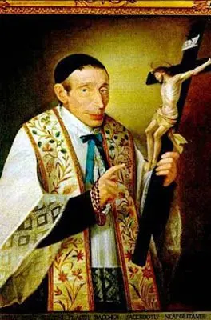
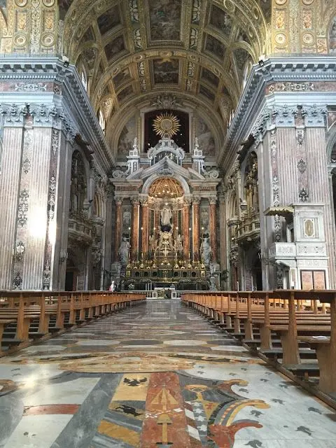
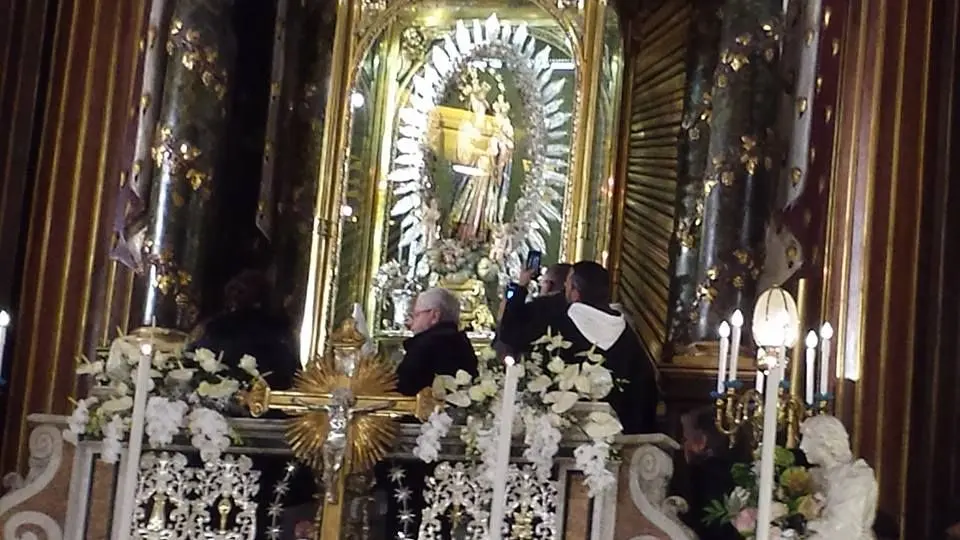
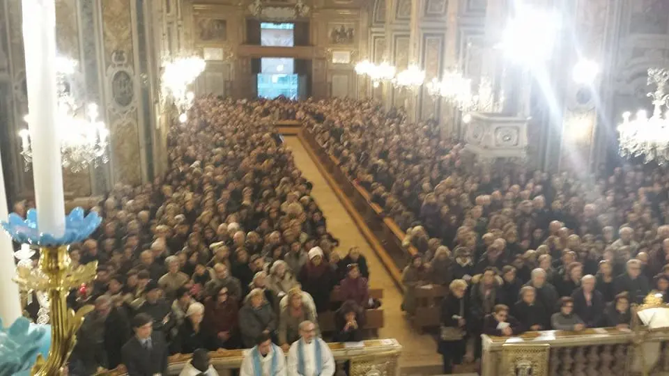
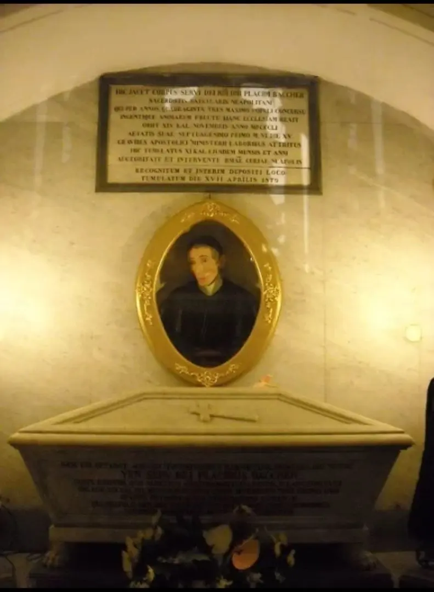

La tradizione napoletana del Sabato Privilegiato

In questi giorni ho fatto un po' di pulizia sul mio telefono, tra foto da conservare ed altre da eliminare, mi è spuntata questa.
È stata l'ultima foto che ho fatto, nelle poche ed ultime uscite a gennaio/febbraio.
Precisamente è stata scattata la mattina del 6 gennaio alle 5 di mattina, stavo andando a Napoli per il giorno del Sabato Privilegiato della Madonna Immacolata di don Placido. Nella chiesa del Gesù Vecchio per una tradizione annuale.
Tradizione partenopea
È una tradizione tutta napoletana, che cade il primo sabato dell'anno.
Vi riporto la storia del perché di questa tradizione religiosa.
Storia del Sabato Privilegiato:
La storia – Anno 1799: Napoli, in seguito alla sanguinosa rivoluzione partenopea, era da poco divenuta una Repubblica.
La città, nelle mani di un governo provvisorio, in piena agitazione, vedeva una dura repressione verso chi era sospettato di fedeltà al re.

Tra questi, Placido Baccher, giovane dall'animo gentile ed ingenuo, ed i suoi fratelli. È la sera precedente al giudizio del Tribunale: <<Domani è sabato – disse il giovane mentre recitava il Santo Rosario – questo giorno non mi può arrecare sventure perché è il giorno della Madonna, giorno delle divine misericordie>>
Addormentatosi, al giovane comparve in sogno la Madonna con parole colme di speranza: <<Confida figliuolo, domani sarai liberato da questo orrido carcere.
Tu però devi essere mio e sarai chiamato in una delle principali chiese di Napoli a zelare le glorie del mio immacolato concepimento>>
Il mattino seguente, dinnanzi ai giudici che guardavano stupiti questo ragazzo dall'aspetto innocuo ed incapace di compiere alcun male, il Tribunale ordinò la scarcerazione.
I carnefici giacobini, quando si accorsero che Placido non era stato fucilato, emisero un nuovo mandato di cattura. Il popolo allora lo protesse calandolo in un pozzo dove ancora una volta scampò alla morte sopravvivendo ad una grave ferita alla testa.
Nell'anno 1806 Placido, ricordandosi della promessa fatta alla Madonna, divenne sacerdote e nel 1811 rettore della Chiesa del Santissimo Salvatore, meglio nota come la Chiesa del Gesù Vecchio.

Proprio da quella chiesa, egli diffuse il culto alla Vergine Immacolata, che lui stesso fece scolpire da Nicola Ingaldi, secondo le sembianze della Vergine che gli apparve in carcere.
Quando poi il 30 dicembre del 1826, i legati di Leone XII incoronarono la meravigliosa statua, la Vergine apparve ancora a Don Placido e chiese un momento di preghiera privilegiato da istituirsi il primo sabato successivo al 30/12 di ogni anno.
Nacque così il Sabato Privilegiato.
Sono trascorsi quasi due secoli da questa storia e ancora oggi il popolo napoletano si reca ogni primo sabato dell'anno che dura tutta la giornata. Infatti, in questa giornata dall'alba al tramonto ci saranno una messa ogni ora.
Prima, dopo o durante la messa, è possibile poi salire (per chi può), una scala che porta davanti alla Madonna: La si guarda, La si prega, si invocano grazie ed intercessione, c’è chi La ringrazia per una malattia guarita, per un figlio nato, per un lavoro trovato.

Difatti si dice che chi si consacra alla Madonna di Don Placido, sarà benedetto tutto l'anno.
«Beati i sacerdoti che celebreranno al mio altare e beati i fedeli che vi faranno la comunione nel sabato seguente alla mia incoronazione»

Ed è così che ogni anno i miei genitori ci vanno, costi quel che costi, io vado influenze permettendo.
E perché a quell'ora? Perché alla prima messa già la chiesa è gremita di fedeli e quindi andare durante la giornata sarebbe davvero un casino.
Non si riuscirebbe a camminare nemmeno in chiesa. Dunque preferiamo svegliarci presto e riuscire ad essere in chiesa quando apre le porte e così è più facile anche trovare un posto e magari confessarci.
“Voglio rimanere ai piedi della Madonna Immacolata”
aveva spesso ripetuto in vita; una volta morto, desiderava essere sepolto ai piedi della Madonnina Immacolata. E cosi fu fatto.
La salma rimase esposta per tre giorni in chiesa, al termine dei quali, l’Arcivescovo accolse la domanda dei Prelati e del popolo per il deposito canonico della salma.

Recitato l’elogio funebre dal canonico Penitenziere don Giovanni Gallo, la salma fu tumulata dietro l’altare maggiore il 22 Ottobre 1851.
Se non conoscevi questa tradizione e credi possa interessare a qualche tuo conoscente, ti invito a condividere questo articolo! XD